🎯 Visão geral
A NR-12 exige que as máquinas sejam seguras e que a empresa prove isso com documentos; a NR-10 faz o mesmo com a parte elétrica. O Sistema NR12 organiza esse trabalho em etapas — cadastrar, inspecionar, avaliar o risco, corrigir, comprovar — e gera, em cada uma, o documento oficial que comprova o que foi feito, com número, revisão, assinatura do responsável técnico e código de validação.
Três ideias explicam quase tudo no sistema:
- Tudo pertence a uma máquina. Inspeção, perigo, não conformidade, ação, ordem de serviço, foto e documento são sempre de uma máquina. Por isso o dossiê da máquina é o centro do sistema.
- Nada de número digitado à mão no laudo. O risco é calculado pelo sistema, a situação da máquina vem do último laudo emitido e cada documento sai do que está registrado.
- Documento emitido não muda. Corrigiu algo? Emite-se uma revisão nova; a anterior fica no histórico e continua conferível.
🗺️ O fluxo completo
A ordem do trabalho para cada máquina. Cada caixa é uma etapa; embaixo, o documento que ela gera.
Em paralelo: o que reprova na inspeção (2) vira proposta de não conformidade → NC → ação, e entra no mesmo plano (4). Os documentos da empresa inteira — Relatório Técnico, Laudo de Aterramento e Prontuário NR-10 — podem ser emitidos a qualquer momento.
🚀 Primeiros passos
No computador, o quadro “Comece por aqui” fica no canto inferior esquerdo (no celular, aparece no Painel). Ele lista sete passos e marca cada um como feito pelo que existe no banco, não por cliques:
- Cadastre os dados da sua empresa — fica feito quando o CNPJ está preenchido (Dados da empresa).
- Cadastre a empresa emitente do laudo — quem emite e assina (Empresa emitente).
- Cadastre a equipe e o responsável técnico — ao menos um membro com registro profissional (Equipe).
- Cadastre as máquinas — à mão ou com Importar planilha (Máquinas).
- Cadastre a ART — com o PDF emitido pelo CREA (ARTs).
- Faça a primeira apreciação em campo — fica feito quando ela chega à análise (Assistente).
- Emita o primeiro laudo (Assinatura e emissão).
💡 Antes da primeira emissão, o RT precisa também aprovar a metodologia em Configurações › Metodologia. Sem isso, a assinatura é recusada.
👥 Quem faz o quê
Cada pessoa tem um papel na Equipe. Os itens do menu que a pessoa não pode usar nem aparecem.
Role para o lado para ver a tabela inteira
| Papel | O que faz no sistema |
|---|---|
| Administrador (master) | Tudo, inclusive equipe, dados da empresa e emitente. |
| Gestor | Planeja e distribui o trabalho, cadastra máquinas e ARTs, revisa propostas de NC, cria ações, emite documentos de gestão. Não assina laudo e não valida ação. |
| Engenheiro | Analisa na mesa de revisão; com registro no CREA vigente, é o RT que assina laudos, aprova a metodologia e valida ações. |
| Técnico / inspetor | Coleta em campo: fotos, perigos, checklist e HRN proposto; faz e finaliza inspeções. |
| Manutenção | Executa as ações do plano e anexa a foto do depois. |
| Operador | Faz o check-list de turno da máquina. |
| Cliente / consulta | Só consulta máquinas e laudos emitidos. |
📊 Painel
É a tela inicial: um retrato do que precisa de atenção agora. Os números são somados no servidor e valem para os filtros escolhidos.
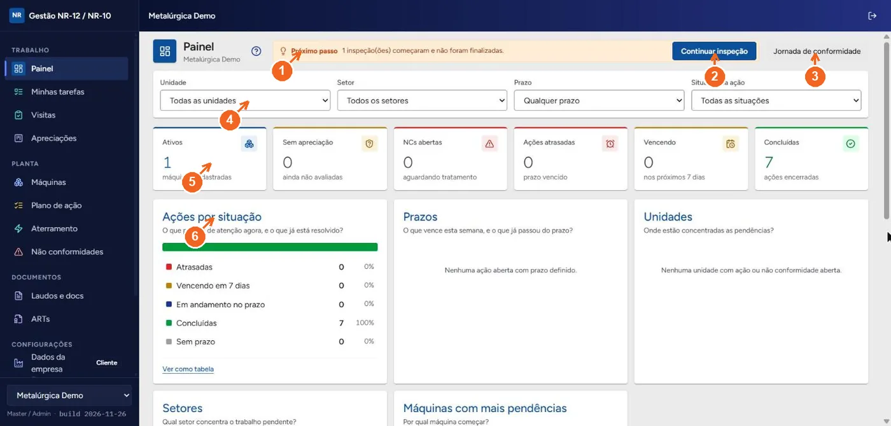
- Próximo passo — a recomendação mais urgente, uma de cada vez (ex.: importar máquinas, ver ações atrasadas, revisar propostas, continuar inspeção).
- Botão do próximo passo — leva direto à tela que resolve.
- Jornada de conformidade — abre a visão por etapas da empresa (veja abaixo).
- Filtros — Unidade, Setor, Prazo (30 dias, 90 dias, vencido, este ano) e Situação da ação. Valem para todos os quadros.
- Indicadores — Ativos, Sem apreciação, NCs abertas, Ações atrasadas, Vencendo e Concluídas. Clique para abrir a lista correspondente.
- Gráficos — Ações por situação, Prazos, Unidades, Setores, Máquinas com mais pendências, Evolução mensal, Custo das adequações e Classificação de risco. Cada barra de máquina abre o dossiê dela.
🧭 Jornada de conformidade
Mostra em que ponto a empresa inteira está, em nove etapas, cada uma com um selo — Em dia, Atenção, Crítico, Não iniciado ou Bloqueado — a próxima ação e um botão para ela.
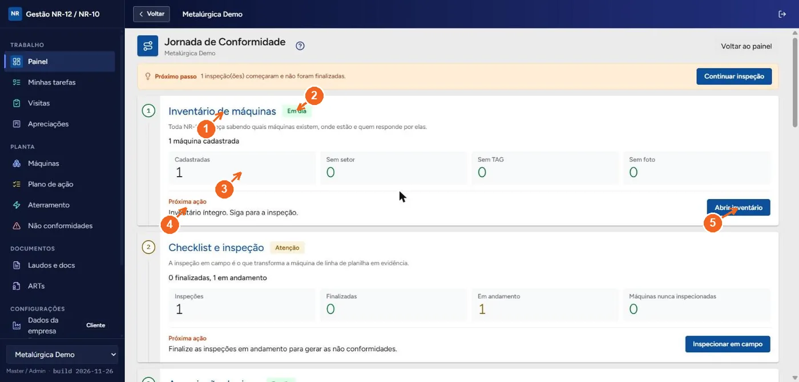
- Etapa — 1 Inventário · 2 Checklist e inspeção · 3 Apreciação de risco · 4 Não conformidades · 5 Plano de ações · 6 Execução e OS · 7 Validação · 8 Documentos · 9 Monitoramento.
- Selo — a apreciação fica Bloqueada enquanto a metodologia não for aprovada.
- Números da etapa — ex.: máquinas sem setor, sem TAG, sem foto.
- Próxima ação — o que fazer para a etapa ficar em dia.
- Botão — abre a lista já filtrada (ex.: só as máquinas sem setor).
📥 Minhas tarefas
As apreciações que estão com você agora, agrupadas pelo que você precisa fazer: Para coletar (inspetor), Assinar a elaboração, Para revisar (analista), Para assinar (RT), Para emitir e Prontas para validar. Dentro de cada grupo, a mais antiga vem primeiro.
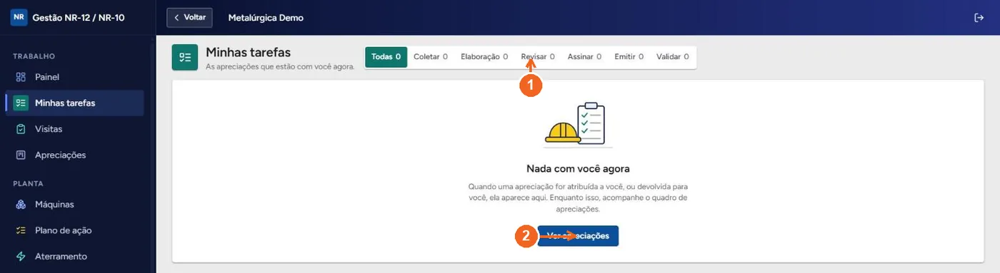
- Filtro por grupo — com a quantidade de cada um.
- Lista vazia — “Nada com você agora”; o botão leva ao quadro de apreciações.
O botão Abrir de cada cartão leva ao lugar certo: o inspetor vai para o assistente de campo; analista e RT vão para a mesa de revisão; “validar” vai para o dossiê da máquina.
☑️ Visitas — inspeção de campo
A inspeção de campo é o check-list de turno da máquina (formulário “Check-list de Segurança NR-12 (turno)”). É dela que nascem as não conformidades do dia a dia. A tela se chama Inspeção em campo.
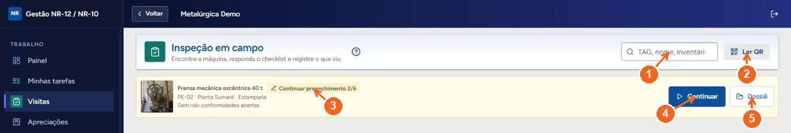
- Busca — por TAG, nome, inventário, unidade ou setor.
- Ler QR — aponte a câmera para a etiqueta da máquina e o check-list abre direto.
- Continuar preenchimento X/Y — há uma inspeção começada nesta máquina.
- Inspecionar / Continuar — abre o check-list. Se já existe um rascunho no aparelho ou no servidor, ele é retomado (nunca cria duas).
- Dossiê — abre a ficha completa da máquina.
Respondendo o check-list
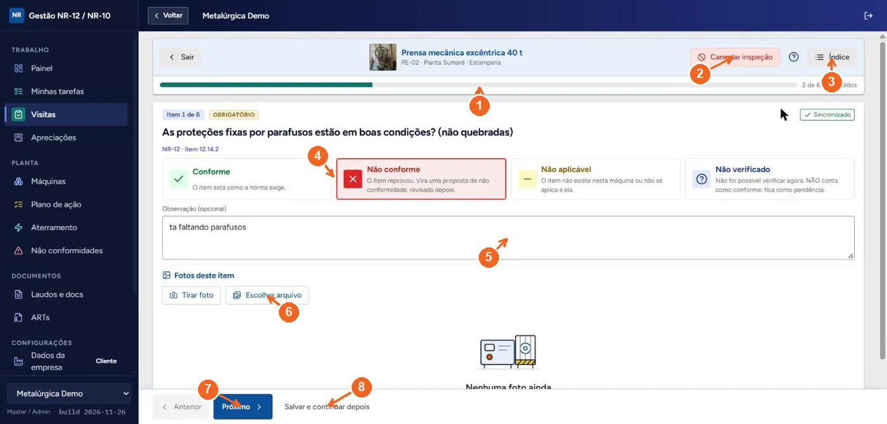
- Progresso — “X de Y respondidos”.
- Cancelar inspeção — só com a inspeção em andamento, por quem a abriu, gestor ou administrador, com motivo (mínimo 5 letras). As respostas ficam só para consulta e nada vira NC.
- Índice — todos os itens, marcados C, NC, NA, NV ou pendente; avisa quantos obrigatórios faltam.
- Respostas — Conforme; Não conforme (vira proposta de NC, revisada depois); Não aplicável; Não verificado (não conta como conforme: fica como pendência). NA e NV exigem motivo escrito.
- Observação — grava sozinha enquanto você digita.
- Fotos deste item — até 8 por item, depois de responder.
- Próximo — no último item vira Finalizar. Não finaliza se faltar item obrigatório.
- Salvar e continuar depois — sai sem perder nada.
🔁 Ao finalizar, cada resposta “Não conforme” vira uma proposta de não conformidade, que alguém autorizado revisa em Não conformidades › Propostas de NC. Inspeção finalizada não pode ser alterada: para corrigir, faça uma inspeção nova.
📋 Apreciações
O quadro de todas as apreciações de risco e validações, por etapa, e com quem cada uma está.
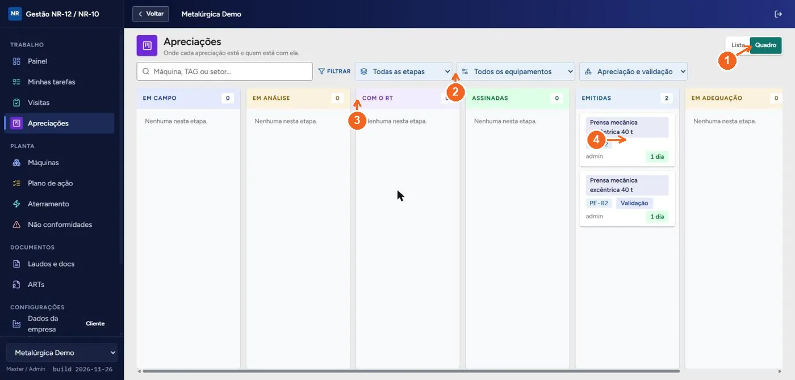
- Lista / Quadro — a mesma informação em tabela ou em colunas.
- Filtros — busca, etapa, equipamento e tipo (apreciação e/ou validação).
- Colunas — Em campo, Em análise, Com o RT, Assinadas, Emitidas, Em adequação.
- Cartão — máquina, responsável e há quanto tempo está na etapa. Clique para abrir.
➕ Criar a apreciação e escolher os responsáveis
A apreciação de risco passa por seis etapas, e cada etapa tem um dono:
A análise pode devolver ao campo e o RT pode devolver à análise — sempre com um comentário dizendo o que corrigir, que fica no histórico.
- No dossiê da máquina, clique em Apreciação de risco (ou, no celular, em Capturar › Abrir pela máquina).
- Escolha o Inspetor (obrigatório; o padrão é você), o Analista (opcional — sem analista, o RT revisa) e o Responsável técnico (só aparece quem é engenheiro com registro vigente).
- Clique em Criar a apreciação. Se o inspetor é você, o assistente abre; senão, ela aparece nas tarefas dele.
Os responsáveis podem ser trocados depois, na mesa, pelo botão Trocar — até a assinatura. A troca fica registrada.
📱 Assistente de campo
É onde o inspetor coleta tudo, no celular ou tablet, mesmo sem internet. São cinco passos; o topo mostra o andamento e o estado do salvamento (“Salvo”, “Salvo no aparelho · aguardando sinal”).
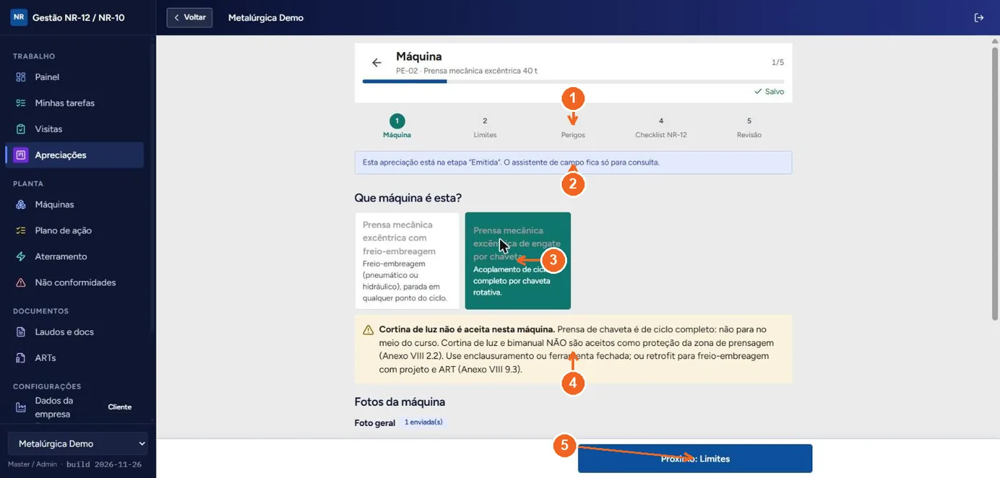
- Os cinco passos — Máquina, Limites, Perigos, Checklist NR-12, Revisão. Toque num número para ir direto.
- Aviso de etapa — depois que sai do campo, o assistente fica só para consulta.
- Que máquina é esta? — escolher o tipo traz sugestões de perigos e regras do anexo da NR-12.
- Alerta do tipo — ex.: em prensa de chaveta, cortina de luz não é aceita como proteção.
- Próximo — avança; nada se perde ao voltar.
Passo 1 · Máquina: tipo, Foto geral, Placa de identificação (até 3 fotos) e os dados da placa (fabricante, modelo, série, ano, capacidade).
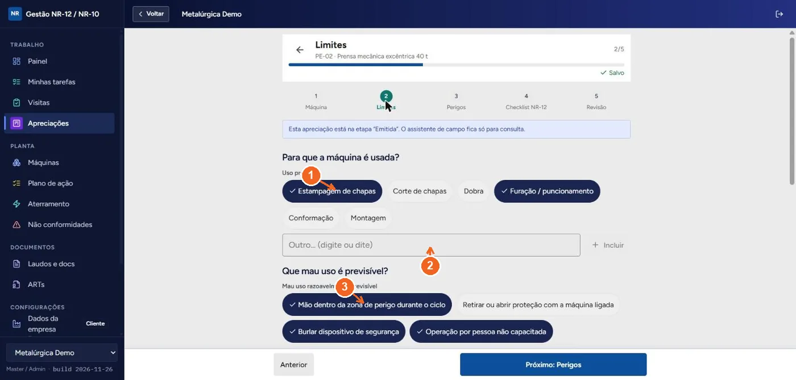
- Uso previsto — toque nas etiquetas para marcar.
- Outro… (digite ou dite) — inclui o que não está na lista.
- Mau uso previsível — o atalho que o operador toma quando a produção aperta.
Passo 2 · Limites: uso previsto, mau uso previsível e Fases e pessoas expostas (o botão Sugerir pelo tipo preenche a partir do tipo de máquina).
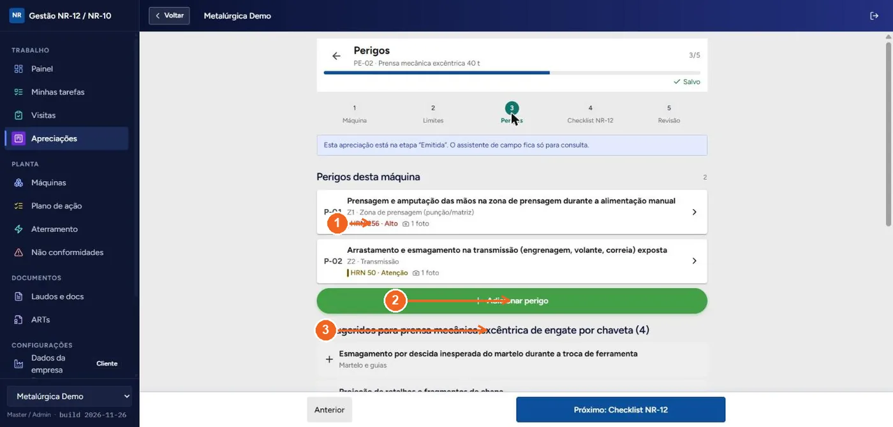
- Perigos registrados — código (P-01, P-02…), zona, HRN com a faixa de cor e número de fotos.
- Adicionar perigo — começa um perigo do zero.
- Sugeridos para o tipo — toque e o perigo nasce já preenchido.
Passo 3 · Perigos. Cada perigo tem seis telas:
- Onde? — a zona de perigo (ex.: Z1 zona de prensagem).
- O quê? — que perigo é, a fase (operação, preparação, limpeza, manutenção, transporte), a tarefa, o tipo (ISO 12100), quem fica exposto, a origem e a consequência.
- Fotos — fotografe o ponto de perigo e use Marcar foto para desenhar marcador, retângulo, elipse, zona, seta, traço, texto ou cota. A foto original nunca é alterada.
- HRN atual — “Qual o risco hoje, como está?”: escolha os quatro fatores e o risco aparece na hora. É uma proposta: o RT confirma no escritório.
- Comando de segurança — se a proteção depende de comando (intertravamento, cortina, bimanual, emergência), escolha S, F e P para ver o PLr e a categoria exigidos; registre abertura e distância medidas, em mm.
- Medidas e residual — as medidas de proteção, cada uma com nível (1 projeto seguro, 2 proteção, 3 informação), e o risco residual depois delas. Se a gravidade mudar, diga por quê.
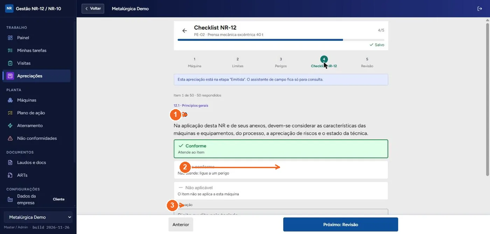
- Item da NR-12 — o número e o texto do item.
- Resposta — Conforme e Não aplicável avançam sozinhos; Não conforme pede o perigo ligado, observação e até 4 fotos.
- Observação — digite ou dite pelo teclado.
Passo 4 · Checklist NR-12: um item por vez; Próximo sem resposta pula para o que falta.
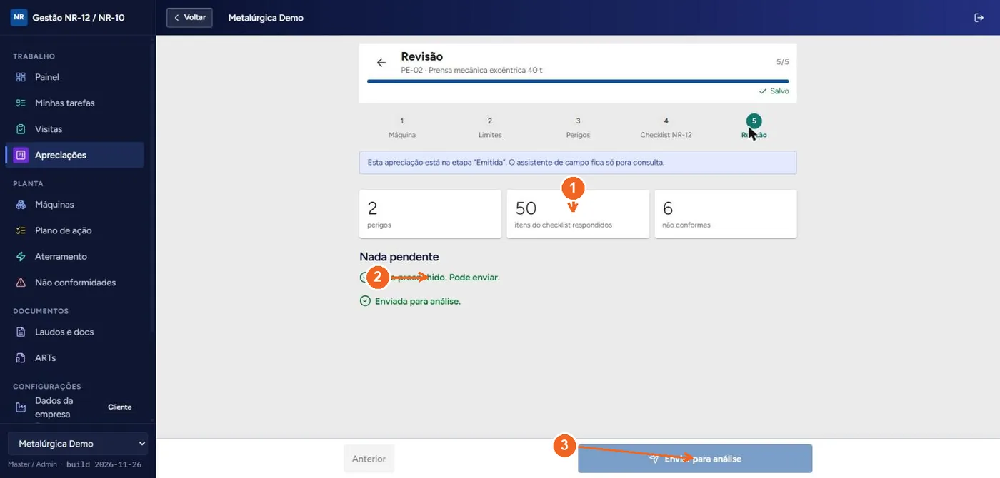
- Resumo — perigos, itens respondidos, não conformes.
- Pendências — tipo não definido, perigo sem foto, HRN incompleto, medida sem nível, checklist incompleto… Cada uma leva ao lugar de corrigir.
- Enviar para análise — as pendências não travam: o analista recebe a lista. Sem sinal, o envio espera na fila.
🔢 HRN, PLr e categoria
O HRN (Hazard Rating Number) mede o tamanho de cada risco multiplicando quatro fatores:
HRN = GPL × PO × FE × NP
Role para o lado para ver a tabela inteira
| Fator | O que pergunta | Escala (exemplos) |
|---|---|---|
| GPL | Grau de possível lesão | 0,1 arranhão · 2 fratura grave · 8 amputação de mão · 15 fatalidade |
| PO | Probabilidade de ocorrência | 0,03 quase impossível · 2 possível · 8 provável · 15 certeza |
| FE | Frequência de exposição | 0,5 anual · 1,5 semanal · 2,5 diária · 5 constante |
| NP | Número de pessoas expostas | 1 (1–2) · 2 (3–7) · 4 (8–15) · 8 (16–50) · 12 (acima de 50) |
- A partir de Significativo, o perigo exige medida de proteção e risco residual; residual a partir de Significativo exige justificativa.
- A faixa define o prazo da ação gerada pelo laudo: Extremo imediato, Alto 30 dias, Significativo 90, Atenção 180, Baixo e Raro 365.
- Quando a proteção depende de comando elétrico, S (gravidade), F (frequência) e P (possibilidade de evitar) dão o PLr (ISO 13849-1) e a categoria (NBR 14153) que o comando precisa ter. Essas tabelas são aprovadas pelo RT em Metodologia.
🖥️ Mesa de revisão
É a tela do escritório. O analista confere e completa o que veio do campo; o RT revisa, confirma o HRN e assina. No computador são três colunas — Índice, Editor e Prévia, pendências e histórico; no celular, três abas. A mesa precisa de internet.
- Fotos e marcação — a foto do perigo com o que o inspetor marcou.
- HRN atual — o valor proposto em campo. O RT usa Confirmar HRN, Confirmar HRN alterado ou Definir e confirmar HRN; se mudar, o valor anterior fica na auditoria.
- Confirmado por — quem confirmou e quando.
- Comando de segurança e distâncias — S, F, P, PLr, categoria e medidas de distância.
O que se faz na mesa:
- Índice — Máquina, Limites de uso, Perigos (do mais grave ao mais leve), Checklist NR-12 e Conclusão; ✓ completo, ● com pendência, ○ a fazer. Dá para Adicionar perigo.
- Editor do perigo — identificação, fotos, HRN atual, comando de segurança, medidas de proteção, risco residual (com a justificativa “por que o residual é aceito?”) e comentários.
- Dados do laudo — velocidade, acionamento, alimentação, processo, legenda das zonas; objetivo e escopo; documentação analisada; instrumentos usados (calibração vencida aparece marcada); recomendação imediata.
- Conclusão — Apta, Apta com restrições ou Inapta, com o texto.
- Comentários — por perigo ou do laudo, com “Marcar como resolvido”.
- Prévia do PDF — o laudo como vai sair, com a marca “RASCUNHO”, sem número e sem assinatura.
- Limites e checklist não se editam na mesa: para corrigir, devolva ao campo.
Botões por etapa: em análise, Enviar ao RT ou Devolver ao campo; com o RT, Confirmar e preparar assinatura (só o RT, sem nenhuma pendência) ou Devolver à análise. Quando um botão está desabilitado, o motivo aparece embaixo dele.
🚦 Pendências: cada uma diz se trava o envio ao RT ou trava a assinatura — por exemplo HRN não confirmado pelo RT, risco Significativo sem medida, residual não avaliado, cortina de luz em máquina que não aceita, conclusão não definida.
✍️ Assinatura do RT e emissão
Confirmar e preparar assinatura abre o diálogo Assinar e emitir — assinatura eletrônica do responsável técnico (Lei 14.063/2020):
- Resumo do laudo — HRN máximo atual e residual, perigos, NCs e conclusão. O servidor confere de novo as pendências.
- ART do laudo — Vincular uma ART cadastrada (só aparecem as que têm o PDF do CREA e são do RT) ou, se a empresa permitir, Emitir sem ART, com justificativa (mínimo 20 letras, impressa no Anexo A).
- Conferência — marque “Revisei os perigos, as medidas e a conclusão.”
- Confirmar identidade — senha ou código por e-mail (6 dígitos). Quem entra com Google usa o código.
- Assinar e emitir — grava a assinatura com a impressão digital (SHA-256) do conteúdo, a etapa vira Assinada e o PDF oficial é gerado. Se a geração falhar, há Tentar gerar de novo — sem nova assinatura.
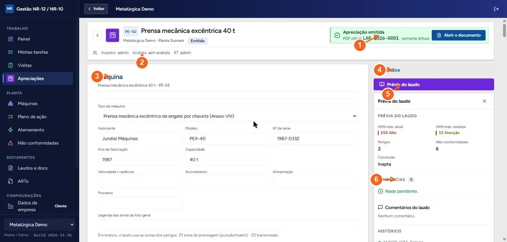
- Apreciação emitida — o número do PDF oficial (ex.: LAR-2026-0001) e Abrir o documento.
- Responsáveis — inspetor, analista e RT.
- Folha de leitura — emitida, a apreciação fica somente para leitura, numa folha corrida.
- Índice — atalhos para cada seção.
- Prévia do laudo — resumo (HRN máximo atual e residual, perigos, NCs, conclusão).
- Pendências, comentários e histórico — toda passagem de etapa fica registrada.
O inspetor também assina a elaboração (botão Assinar elaboração em Minhas tarefas ou no aviso da mesa); no laudo, ela aparece como assinatura “Elaboração (inspeção de campo)”.
⚙️ O que acontece ao emitir
- 🔢 O laudo ganha número oficial (ex.: LAR-2026-0001, por emitente e ano) e código de validação de 16 caracteres, impresso no rodapé e no QR.
- 🗓️ Cada medida “a implantar” vira uma ação no plano, com código AC-AAAA-NNNNN e prazo pela faixa do HRN. Medida de nível 3 vira ação de procedimento; as demais, adequação física.
- 🏷️ A situação NR-12 da máquina passa a ser a conclusão do laudo: Apta, Apta com restrições ou Inapta.
- 🔒 O laudo fica imutável. Mudou algo? Faça uma revisão.
🏭 Máquinas
O inventário: a lista de todas as máquinas e equipamentos. Tudo no sistema se pendura aqui.
- Colunas — foto, nome, TAG, setor, situação NR-12 (cor pela conclusão do último laudo; “Não avaliada” antes do primeiro) e número de NCs abertas.
- Busca — TAG, nome, inventário, fabricante, modelo ou série, sem precisar de acento.
- Filtros — unidade e setor.
- Etiquetas QR — PDF com a etiqueta de cada máquina (60 × 32 mm, 24 por folha A4) para imprimir e colar.
- Nova máquina — Unidade (obrigatória; dá para criar uma nova), Setor, Nome (obrigatório), TAG (única), nº de inventário, fabricante, modelo, série e capacidade.
🏷️ TAG e setor fazem diferença: sem eles a máquina existe, mas não é encontrável em campo. A Jornada mostra quantas estão sem TAG, sem setor e sem foto.
🗂️ Dossiê da máquina
Tudo sobre uma máquina num lugar só. Clique em qualquer máquina da lista para abrir.
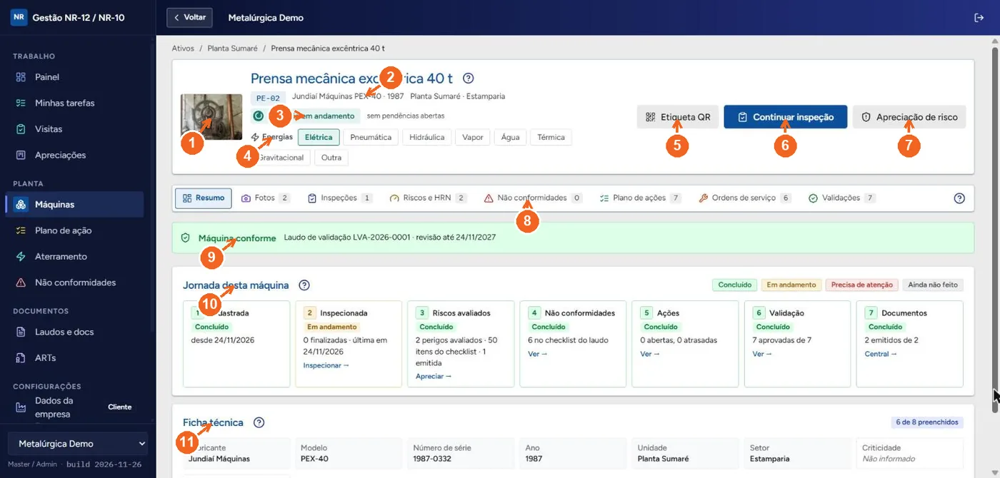
- Foto principal — a que aparece na lista e na capa do laudo. Clique para ampliar; sem foto, Adicionar foto.
- Identificação — TAG, fabricante, modelo, ano, unidade e setor.
- Selo da inspeção — Nunca inspecionada, Inspeção em andamento ou Inspecionada; ao lado, as pendências (NCs, ações atrasadas, OS abertas).
- Energias — marque com um clique as energias da máquina (elétrica, pneumática…). Alimentam o laudo, o manual e o prontuário NR-10.
- Etiqueta QR — imprime a etiqueta desta máquina.
- Iniciar / Continuar inspeção — abre o check-list de turno numa janela.
- Apreciação de risco — cria a apreciação; se houver uma aberta, vira Continuar apreciação ou Continuar validação.
- Abas — Resumo, Fotos, Inspeções, Riscos e HRN, Não conformidades, Plano de ações, Ordens de serviço, Validações (o número é quantos registros há).
- Situação NR-12 — Em adequação (x de y ações), Pronta para validar (com Iniciar validação), Em validação ou Máquina conforme · revisão até….
- Jornada desta máquina — sete etapas: Cadastrada, Inspecionada, Riscos avaliados, Não conformidades, Ações, Validação, Documentos. Verde concluído, amarelo em andamento, vermelho precisa de atenção. Não é porcentagem de conformidade.
- Ficha técnica — os dados que entram no cabeçalho dos laudos. Campo vazio aparece como “Não informado”.
No canto superior direito aparece o aviso Próximo passo desta máquina (ex.: “nunca foi inspecionada — comece pela inspeção”). Ele recolhe sozinho e pode ser reaberto pelo selo no topo.
Aba Fotos
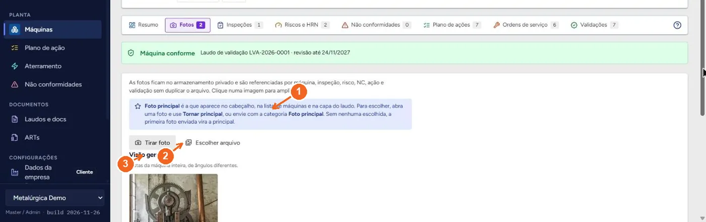
- Foto principal — escolha abrindo a foto e usando Tornar principal.
- Tirar foto / Escolher arquivo — antes de enviar, escolha a categoria, escreva a legenda e descarte o que ficou ruim (até 24 por vez).
- Categorias — Visão geral, Placa, Painel e comandos, Riscos, Inspeção, Antes, Durante, Depois da adequação, Detalhe técnico, Validação, Documentos.
As fotos ficam em armazenamento privado e são reaproveitadas por inspeção, risco, NC, ação e validação, sem duplicar o arquivo. No visor ampliado há zoom, setas, legenda editável e Remover daqui.
As outras abas
- Inspeções — cada check-list feito, com data e situação (Finalizada, Em andamento, Cancelada). Clique para abrir.
- Riscos e HRN — as apreciações da máquina, com versão, situação e quem aprovou.
- Não conformidades — código, título, situação e a ação de tratamento com prazo (ou “Sem ação criada”).
- Plano de ações — as ações da máquina com progresso, prazo e os selos OS e validada.
- Ordens de serviço — código, situação, abertura, execução e custo (mão de obra + peças).
- Validações — as conferências de cada ação executada, com quem validou.
🗓️ Plano de ação e ordens de serviço
Todas as ações de adequação da empresa, venham do laudo ou de uma não conformidade.
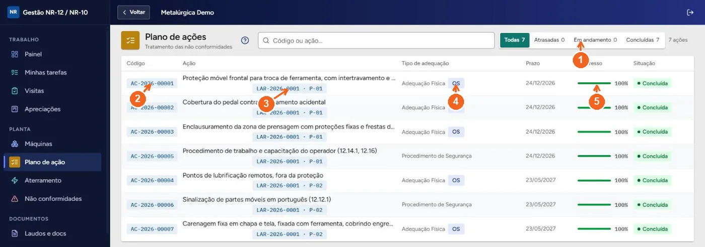
- Recortes — Todas, Atrasadas, Em andamento, Concluídas, com a contagem.
- Código — AC-AAAA-NNNNN.
- Origem — o laudo e o perigo de onde a ação veio (ex.: LAR-2026-0001 · P-01). Clique para abrir o laudo.
- OS — este tipo de ação exige ordem de serviço.
- Progresso — calculado pelas etapas registradas, nunca digitado.
Dentro de uma ação
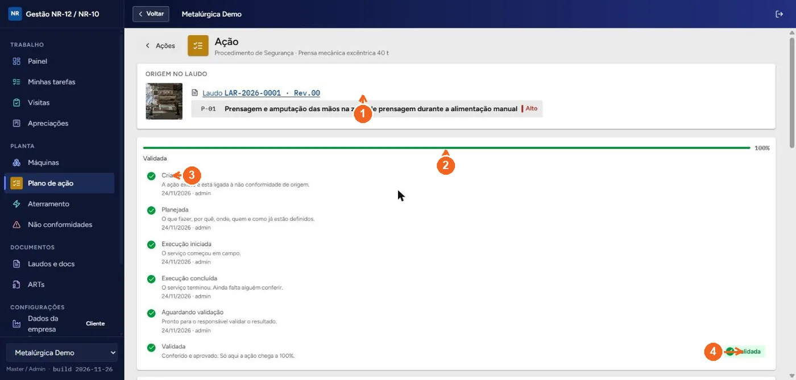
- Origem no laudo — foto do perigo, laudo, código do perigo e faixa do HRN.
- Progresso — vai até 90% com a execução concluída; só chega a 100% com a validação aprovada.
- Ciclo — Criada → Planejada → OS aberta → Execução iniciada → Execução concluída → Aguardando validação → Validada. Use Registrar no próximo passo; os passos andam em ordem.
- Validada — conferida e aprovada.
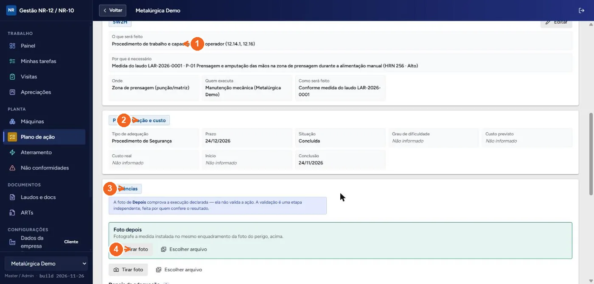
- 5W2H — o que será feito, por que, onde, quem executa e como. Use Editar para ajustar.
- Prazo, situação e custo — tipo de adequação, prazo, dificuldade, custo previsto e real, início e conclusão.
- Evidências — a foto de depois comprova a execução, mas não valida a ação.
- Foto depois — fotografe a medida instalada no mesmo enquadramento da foto do perigo.
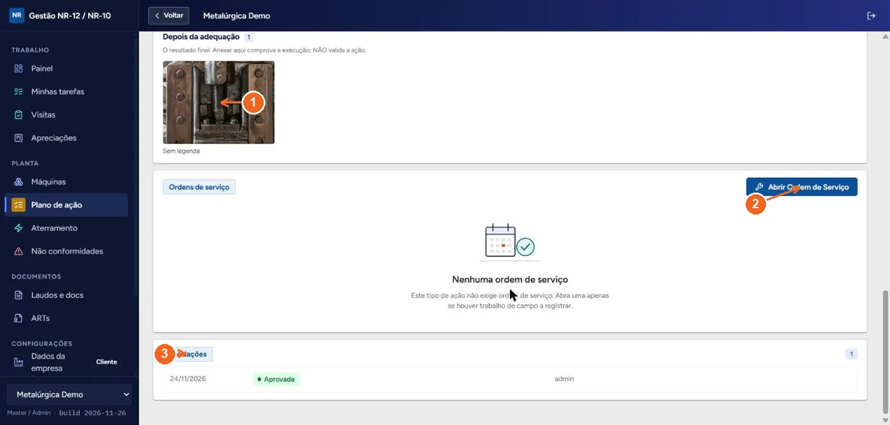
- Depois da adequação — as fotos que comprovam a execução.
- Abrir Ordem de Serviço — tipo (corretiva, preventiva, adequação…), prazo e equipe. Gera OS-AAAA-NNNNN. Quando o serviço termina, Registrar execução com data, custos e o que foi feito.
- Validações — Validar abre “Validar execução”: Aprovada conclui a ação (100%); Reprovada devolve para tratativa.
✅ Para validar uma ação é preciso: execução marcada como concluída, OS com execução registrada (quando o tipo exige), responsável definido e ao menos uma foto do depois. A tela lista o que falta.
⚡ Aterramento
As medições de resistência de aterramento, ponto a ponto, que geram o Laudo de Aterramento.
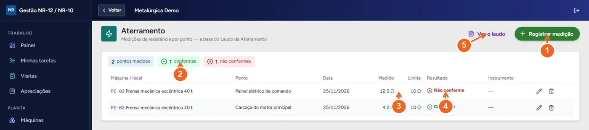
- Registrar medição — máquina (ou unidade, para painel e malha), ponto, valor em Ω, limite (10 Ω por padrão, editável por ponto), data, instrumento e método.
- Resumo — pontos medidos, conformes e não conformes.
- Medido e limite — de cada ponto.
- Resultado — calculado pelo sistema: conforme quando o valor é menor ou igual ao limite.
- Ver o laudo — abre o Laudo de Aterramento em Laudos e docs, para prévia e emissão.
Salvar e medir outro ponto mantém máquina, data, instrumento e método — é só trocar o ponto e o valor.
⚠️ Não conformidades
Tudo o que foi encontrado fora da norma e o que já virou ação.
A situação da NC acompanha as ações dela automaticamente. Se a validação for reprovada, a NC reabre.
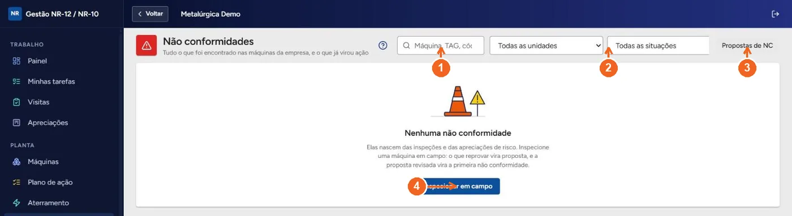
- Busca — máquina, TAG, código ou descrição.
- Filtros — unidade, situação e Mais filtros (setor, origem, com ou sem ação).
- Propostas de NC — o que as inspeções apontaram e ainda precisa de revisão.
- Lista vazia — as NCs nascem das inspeções: o atalho leva a inspecionar.
De onde vêm as NCs
- Inspeção de campo: cada “Não conforme” vira proposta. Em Propostas de NC (abas Aguardando revisão, Confirmadas, Rejeitadas, Duplicadas, Agrupadas), quem tem permissão escolhe: Confirmar e criar a NC (as fotos do item vão junto), Já existe NC, Juntar a outra proposta ou Rejeitar (com motivo).
- Importação de planilha de plano de ação.
- Os itens não conformes do checklist do laudo de apreciação ficam no próprio laudo e viram as medidas e ações dele.
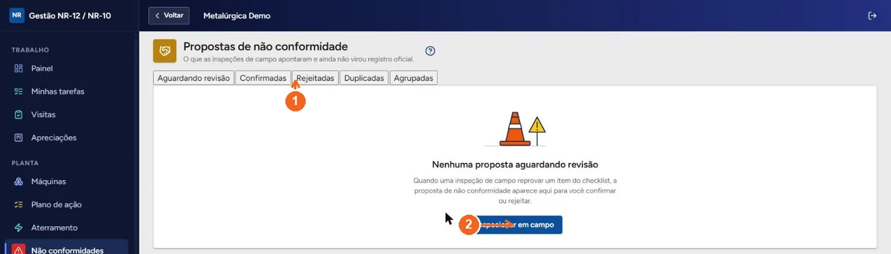
- Abas — cada proposta fica numa aba conforme a decisão.
- Inspecionar em campo — quando não há nada a revisar.
Como tratar uma NC
- Na lista de NCs, clique em Criar ação de tratamento: o que será feito, tipo de adequação (os que exigem OS aparecem marcados), responsável e prazo.
- A ação nasce “Pendente” (AC-AAAA-NNNNN) e a NC passa a Em tratativa.
- Siga o ciclo da ação: OS, execução, foto do depois.
- Com a execução concluída, a NC fica Aguardando validação; com a validação aprovada, Encerrada.
Onde as NCs aparecem nos documentos: no Relatório Técnico (abertas e encerradas) e no Check-list mensal (diário de bordo). O prazo da NC é o da ação dela.
✅ Validação da adequação (laudo LVA)
Prova que as correções do laudo foram feitas e funcionam. Fica disponível quando todas as ações do laudo estão concluídas: a máquina aparece como Pronta para validar no dossiê e em Minhas tarefas.
- No dossiê, clique em Iniciar validação e escolha os responsáveis. O sistema copia do laudo os perigos com medida, o HRN atual e o residual projetado.
- Em campo (dois passos: Perigos com medida e Revisão), para cada perigo:
- As medidas foram implantadas? — implantada, parcial ou não implantada;
- Testes funcionais — use os sugeridos ou adicione (ex.: “abrir a porta com a máquina ligada → a máquina para”), cada um Ok ou Falha;
- Distância de segurança medida;
- Foto antes × depois — a foto do laudo fica congelada; a do depois pode copiar as marcações da antes;
- HRN residual verificado — lado a lado com o atual e o projetado;
- Categoria e PL alcançados.
- Na mesa, conclusão: Conforme, Conforme com ressalvas ou Não conforme. O sistema sugere pelos dados e recusa “Conforme” com medida não implantada, teste com falha ou residual acima de Atenção.
- O RT assina e emite, como na apreciação. O número é LVA-AAAA-NNNN.
🏁 Depois de emitida: com Conforme, a máquina passa a Máquina conforme e ganha a data da próxima revisão (12 meses, por padrão). Com Não conforme, as medidas reprovadas voltam ao plano como ações novas.
📄 Laudos e docs
Onde ficam todos os documentos emitidos, em três grupos: Gestão, Avaliação técnica e Responsabilidade e evidências.
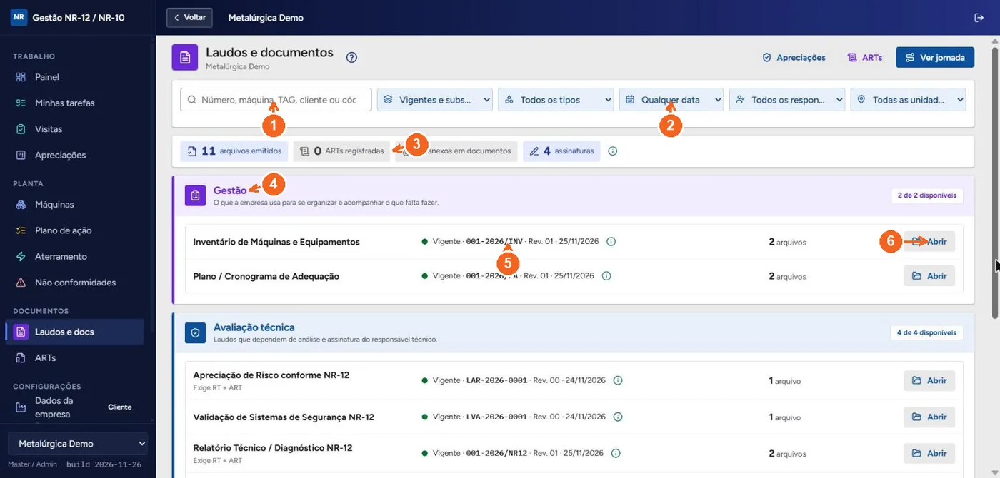
- Busca — número, máquina, TAG, cliente ou código de validação.
- Filtros — vigentes ou substituídos, tipo, data, responsável e unidade.
- Contadores — arquivos emitidos, ARTs, anexos e assinaturas.
- Grupo — Gestão (inventário e plano), Avaliação técnica, Responsabilidade e evidências.
- Situação do tipo — Vigente · número · revisão · data, “Ainda não emitido — os dados já permitem emitir”, “Sem dados para emitir ainda” ou “Aguardando o responsável técnico”.
- Abrir — todas as revisões daquele tipo; dentro, Prévia e nova revisão.
- Revisar e emitir — abre o leitor com a prévia (marca “Rascunho”) e o botão Emitir Rev. NN. A emissão entra na fila (“Na fila”, “Emitindo · N%”) e o documento aparece como vigente.
- “N alterações desde a Rev. X” — os dados mudaram depois da emissão: confira a prévia e emita a revisão nova.
- Os laudos de Apreciação e de Validação não são emitidos aqui: saem da mesa de revisão, pela assinatura do RT.
- Revisão nova não apaga a anterior: “Ver histórico” lista todas.
📚 Cada documento: para que serve e quando emitir
Role para o lado para ver a tabela inteira
| Documento | Para que serve | De onde sai | Quando emitir |
|---|---|---|---|
| Inventário de Máquinas | A lista oficial das máquinas da empresa. | Cadastro de máquinas. | No início e quando entrar ou sair máquina. |
| Apreciação de Risco (LAR) | O diagnóstico de cada máquina: perigos, risco e medidas. Assinado pelo RT com ART. | Assistente de campo + mesa de revisão. | Uma por máquina; refazer se a máquina mudar. |
| Plano / Cronograma de Adequação | Todas as ações com prazo e andamento — o compromisso da empresa. | Plano de ação. | Depois das apreciações e a cada atualização relevante. |
| Validação (LVA) | A prova de que a correção foi feita e funciona. | Validação em campo + mesa. | Quando as ações da máquina terminam. |
| Manual de Instruções de Segurança | Fica junto à máquina: uso permitido e proibido, zonas de perigo, emergência, bloqueio de energias, capacitação. | Apreciação emitida (+ validação, se houver). | Depois da apreciação; revisão nova após validar. |
| Check-list de Segurança | Prova da conferência de rotina, máquina por máquina, mês a mês. | Inspeções finalizadas do mês. | Mensal, por máquina. |
| Relatório Técnico / Diagnóstico | O retrato da empresa inteira: conformes, NCs, ações atrasadas. | Tudo o que está registrado. | Ao fechar etapas ou para a diretoria. |
| Laudo de Aterramento | Medições do fio terra de máquinas e painéis contra o limite. | Planta › Aterramento. | Anual e após reforma elétrica. |
| Prontuário NR-10 | A pasta da parte elétrica (carga acima de 75 kW): o que existe e o que falta anexar, item a item. | Máquinas elétricas, aterramento, documentos, equipe, ARTs. | Sempre atualizado. |
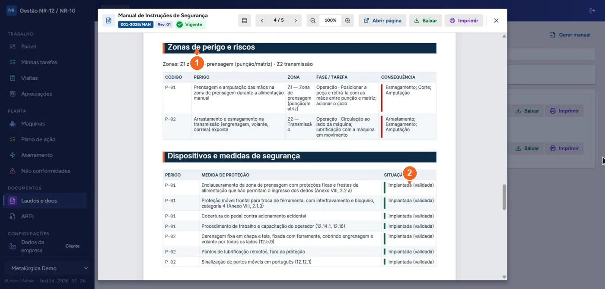
- Zonas de perigo — do laudo de apreciação.
- Situação da medida — “Implantada (validada)” quando a validação comprovou; “A implantar” antes dela.
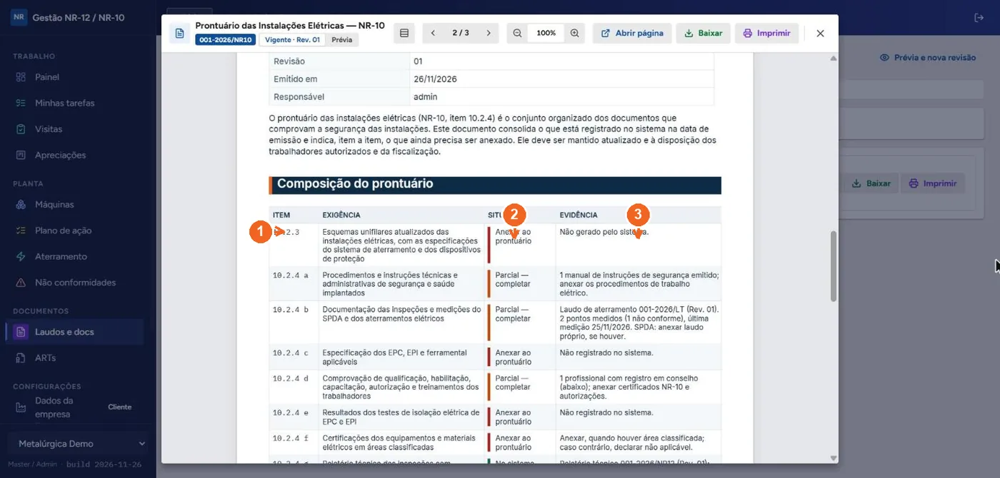
- Item da NR-10 — 10.2.3 e 10.2.4 a–g.
- Situação — no sistema, parcial ou anexar ao prontuário.
- Evidência — o que o sistema já tem (ex.: laudo de aterramento, manuais, profissionais).
🔌 O prontuário só fica disponível com ao menos uma máquina com a energia Elétrica marcada no dossiê. Manual e check-list são por máquina: Gerar manual e Gerar check-list pedem a máquina (e o mês).
🔒 Documento emitido, ciência do cliente e validação
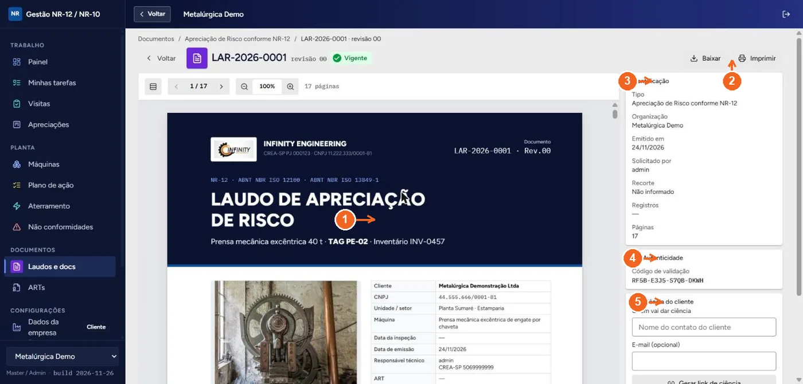
- Visualizador — rolagem contínua, zoom e seleção de texto.
- Baixar / Imprimir — o PDF original (arquivo “número-revNN.pdf”).
- Identificação — tipo, organização, emissão, quem solicitou, páginas.
- Autenticidade — o código de validação e o SHA-256 do arquivo.
- Ciência do cliente — gere um link (vale 30 dias, uso único) para o cliente ler o laudo e registrar que recebeu. Ciência não é concordância técnica.
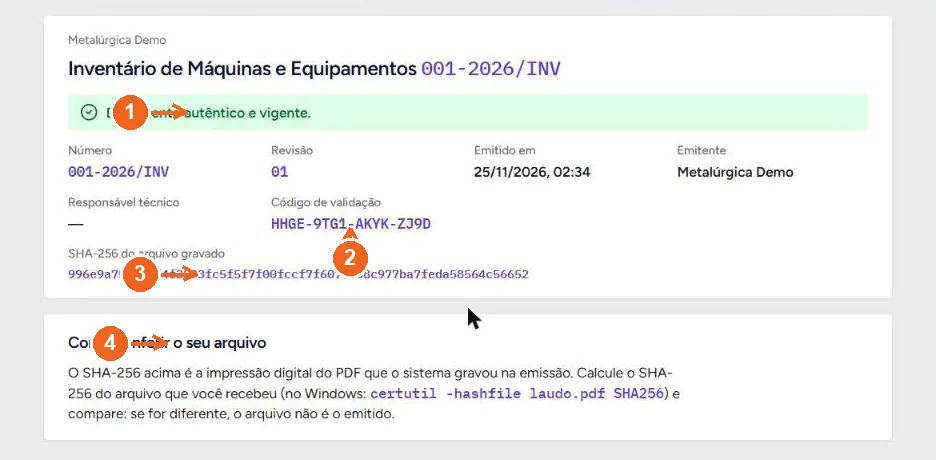
- Situação — “Documento autêntico e vigente” ou “substituído pela revisão NN”.
- Código de validação — o mesmo impresso no PDF.
- SHA-256 — a impressão digital do arquivo gravado.
- Como conferir — compare o SHA-256 do arquivo recebido com o da página.
Qualquer pessoa com o código confere se o documento é válido — número, revisão, data, emitente e RT. A consulta não dá acesso ao conteúdo do documento nem aos dados da empresa.
📜 ARTs
As Anotações de Responsabilidade Técnica emitidas no CREA, com o PDF original. Uma ART pode cobrir vários laudos.
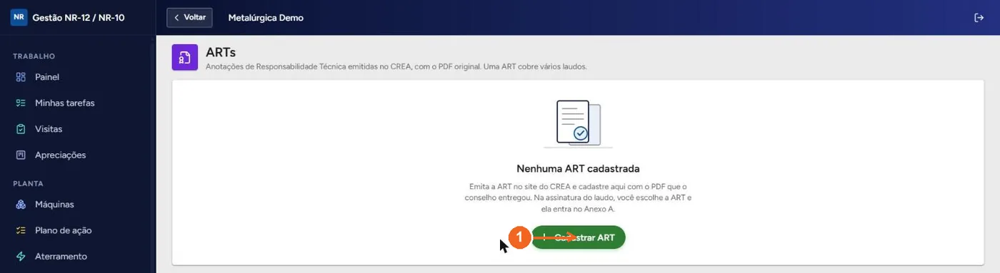
- Cadastrar ART — número, tipo (inicial, complementar, substitutiva, múltipla), RT (em branco vale para qualquer RT da empresa), contratante, atividade, datas, chave e link de verificação do CREA (vira QR no Anexo A) e o PDF da ART (obrigatório, até 20 MB).
A ART é vinculada ao laudo na assinatura e entra como Anexo A, com as páginas do PDF copiadas no laudo. ART já usada em laudo emitido fica travada e não pode ser excluída.
🏢 Dados da empresa
O cliente: a empresa dona das máquinas. Aparece como contratante nos laudos e no plano.
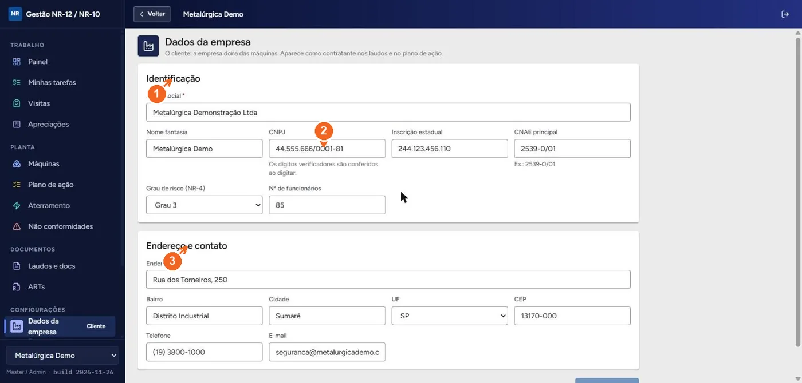
- Identificação — razão social, fantasia, CNPJ, inscrição estadual, CNAE, grau de risco (NR-4), funcionários.
- CNPJ — os dígitos são conferidos ao digitar.
- Endereço e contato.
🖋️ Empresa emitente
Você: quem emite e assina os laudos. Aparece no cabeçalho e define a numeração.
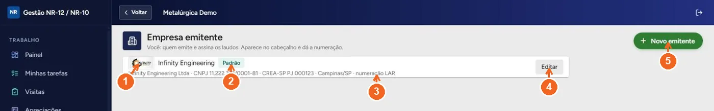
- Emitente — logo, razão social, CNPJ e registro no CREA (pessoa jurídica).
- Padrão — o emitente usado nos novos laudos.
- Numeração — prefixo do laudo (LAR → LAR-2027-0042) e da validação (LVA).
- Editar — inclusive o logotipo (SVG recomendado, ou PNG/JPG).
- Novo emitente — pode haver mais de um.
👷 Equipe e registro do RT
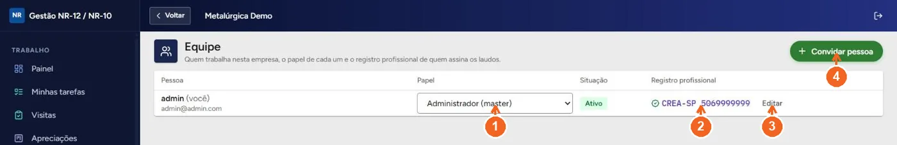
- Papel — define o que a pessoa pode fazer (veja a tabela).
- Registro profissional — conselho (CREA ou CFT), UF, número e validade.
- Editar — cadastra ou atualiza o registro. Só assina laudo quem é engenheiro e tem registro vigente.
- Convidar pessoa — e-mail, nome e papel; a pessoa recebe o convite e define a senha.
A assinatura é eletrônica: não há imagem de assinatura para enviar. O RT confirma a identidade com senha ou código no momento de emitir.
Σ Metodologia
As tabelas de risco usadas no laudo. As matrizes de categoria (NBR 14153) e de PLr (ISO 13849-1) precisam da conferência do RT da empresa antes do primeiro laudo oficial.
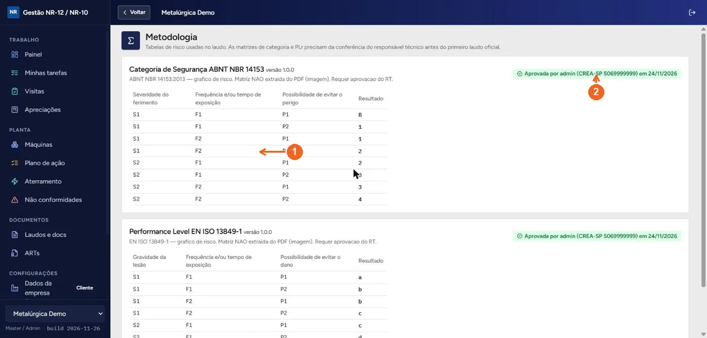
- Tabela S/F/P — gravidade, frequência e possibilidade de evitar → categoria ou PL.
- Aprovada por — o RT que conferiu, com o registro e a data. Sem aprovação, o botão é Conferi e aprovo para esta empresa.
📥 Importar planilha
Traz o inventário de máquinas ou o plano de ações de uma planilha .xlsx, sem recadastrar à mão.
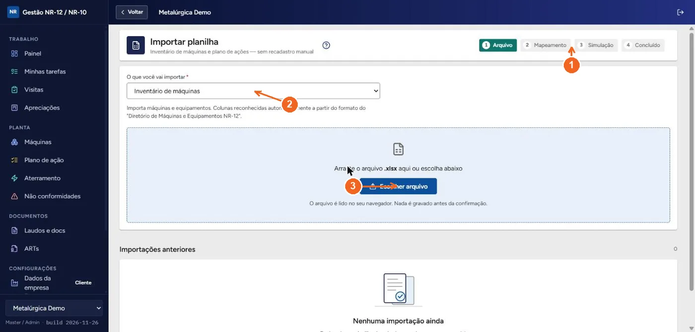
- Etapas — Arquivo → Mapeamento → Simulação → Concluído.
- O que você vai importar — Inventário de máquinas ou Plano / cronograma de ações.
- Escolher arquivo — o arquivo é lido no navegador; nada é gravado antes de você confirmar.
- Mapeamento — cada coluna da planilha vira um campo; TAG, inventário e série nunca viram número (“1.410” continua “1.410”).
- Simulação — mostra o que será criado, o que já existe (nada é sobrescrito) e o que foi rejeitado, com o motivo, antes de gravar.
- Tudo ou nada — o lote entra inteiro numa transação. Errou? Desfazer esta importação (recusa se já houver trabalho feito em cima).
- A mesma planilha importada de novo não duplica: as linhas existentes são puladas.
📶 Celular, QR e sem internet
- Celular: a barra inferior tem Tarefas, Máquinas, Capturar (apreciações em campo), Sincronizar e Mais (o menu completo).
- Etiqueta QR: apontada pela câmera comum do celular, abre o dossiê da máquina; pelo Ler QR da tela Visitas, abre direto o check-list.
- Sem internet: inspeção, assistente de campo e fotos continuam funcionando. Tudo fica salvo no aparelho e sobe sozinho quando o sinal volta (o topo mostra “N pendente(s)”). Só é preciso ter aberto aquela inspeção ou apreciação uma vez com sinal.
- Precisa de internet: mesa de revisão, mudança de etapa, assinatura e emissão.
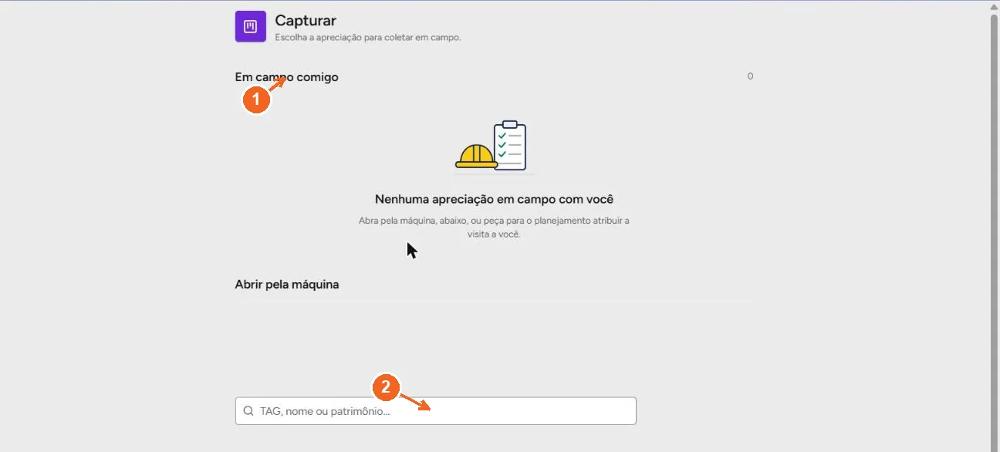
- Em campo comigo — as apreciações atribuídas a você para coletar.
- Abrir pela máquina — busque pela TAG, nome ou patrimônio para começar.
📆 Rotina sugerida
- Implantação: siga o “Comece por aqui” — empresa, emitente, equipe e RT, metodologia aprovada, máquinas (ou planilha), ART. Emita o Inventário.
- Para cada máquina: apreciação de risco (campo → mesa → RT) e, emitida, o Manual.
- Toda semana: revise as propostas de NC, crie as ações de tratamento e acompanhe o Plano de ação pelo Painel.
- Quando as ações de uma máquina terminam: validação (LVA) e revisão nova do manual.
- Todo turno: o operador faz o check-list; todo mês, emita o Check-list de cada máquina.
- Todo ano: medições de aterramento, laudo e prontuário NR-10 atualizado; revisão das apreciações conforme a data de cada máquina.
- Para mostrar resultado: emita o Relatório Técnico.
❓ Perguntas frequentes
Qual a diferença entre a inspeção de campo e a apreciação de risco?
A inspeção de campo é o check-list de rotina (de turno): rápida, feita pelo operador ou técnico, e o que reprova vira proposta de não conformidade. A apreciação de risco é o estudo completo da máquina — perigos, fotos, HRN, comando de segurança e medidas — revisado na mesa e assinado pelo RT, e gera o laudo oficial.
Qual a diferença entre a apreciação de risco e a validação?
A apreciação é o diagnóstico: o que está errado e o que fazer. A validação vem depois das correções e prova, com testes e risco medido de novo, que as medidas foram implantadas e funcionam. A apreciação diz o que fazer; a validação prova que foi feito.
Como uma não conformidade é encerrada?
Automaticamente, pelas ações dela: com ação criada a NC fica Em tratativa; com a execução concluída, Aguardando validação; quando todas as ações são validadas e aprovadas, Encerrada, com a data. Se a validação for reprovada, a NC reabre.
Onde eu subo as fotos e os arquivos?
Fotos da máquina na aba Fotos do dossiê; fotos de cada item na inspeção e no assistente de campo; fotos de antes, durante e depois na ação; o PDF da ART em ARTs; o logotipo em Empresa emitente. Tudo fica em armazenamento privado da empresa.
O que acontece quando eu mudo um dado depois de emitir um documento?
O documento emitido não muda. Em Laudos e docs aparece “N alterações desde a Rev. X”: confira a prévia e emita a revisão nova. A anterior continua no histórico e o código dela continua conferindo.
Posso usar o sistema sem internet em campo?
Sim, para inspeção, assistente de campo e fotos: tudo fica no aparelho e sincroniza sozinho quando o sinal volta. Mesa de revisão, assinatura e emissão precisam de internet.
Quem pode assinar um laudo?
Só o responsável técnico atribuído à apreciação, com papel de engenheiro e registro profissional vigente cadastrado em Equipe, depois de a metodologia ter sido aprovada pelo RT da empresa.
Fale com a equipe pelo botão de WhatsApp no canto da tela — a gente abre o sistema junto com você.